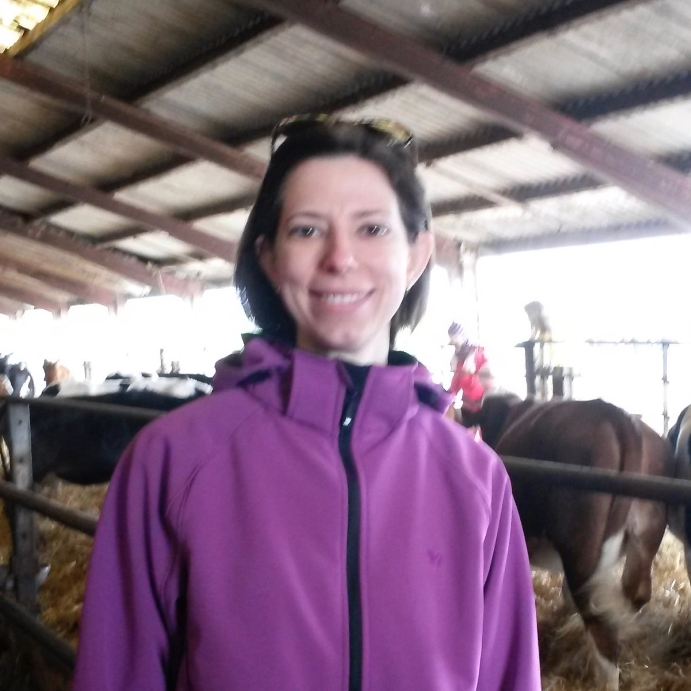

My main research interests are in the development of computational methods for optimization of biological problems; statistical and functional analysis methods for high throughput genomic data (microarrays, SNPs, sequence); estimation of population genetics parameters using genome-wide data; and simulation of biological systems.
My personal research interests are in the development and applications of statistical models to problems in quantitative genetics and general agricultural research. I am also co-director of the CANR Statistical Consulting Center (www.scc.msu.edu) and teacher of graduate level service courses in statistical methods and experimental design.
I have been a lab manager at MSU since 1997. In addition to the Huang Lab, I am also lab manager for two other faculty members. I received my B.S. and M.S. from the University of Kentucky. In addition to conducting research, I am responsible for overseeing the routine functioning of the laboratory as well as training students. When I’m not at work, I’m busy trying to keep up with my five-year old twin girls.
Post-docs
Research Scholar, 2018 -

Ph.D. (Quantitative Genetics)
2014
M.Sc. (Statistics)
2011
B.Sc. (Statistics)
2008
With a strong statistical background, my main objectives and interests are applications of computational and statistical methods to research on quantitative genetics, in order to improve genomic prediction.
My research interests are high-throughput omics data analysis, development of bioinformatics tools and construction of bioinformatics database. Now my research focuses on alternative splicing in livestock.
Visiting Scholar, 2019 -
Doctorate (Population Genetics)
2015
Cheikh Anta Diop University of Dakar, Senegal
M.Sc. (Population Genetics)
2011
Cheikh Anta Diop University of Dakar, Senegal
B.Sc.(Natural Sciences)
2009
Cheikh Anta Diop University of Dakar, Senegal
I am currently a visiting scholar as a post-doc at MSU since September 2019. My research work at MSU focus on the use of genomic methods to see how good the African cattle breeds data are and determine how does the breed composition look like. I also have interests in using genetic models and genomic methods to increase the dairy genetic potential of Senegalese local cattle breeds.
During my free time, I love enjoy moments with my family and sometimes doing some cooking and reading.
I joined MSU as a Research Associate at the end of 2019, working on feature selection optimisation using evolutionary algorithms in genetic prediction. I received my Ph.D. shortly before this in Stirling, Scotland. I'm an amateur photographer, and love going on photo-walks with my wife and dogs.
I joined MSU as a Research Associate at the beginning of 2019. My current project aims to describe the variation of genes of the immune systems of Holstein cows using RNA-seq data.
Ph.D. (fisheries, aquaculture and aquatic science)
2018
Auburn University
M.S. student (aquaculture)
2014
Ocean University of China
B.S. (aquaculture)
2013
China Agricultural University
Life is fantastic, but also complicated. It is of importance and interest to understand the molecular mechanisms underlying complex traits, and breed animals with great performance and production traits. My primary research interest is using genetics, genomics, and bioinformatics to deal with problems in animal science.
Masters & Ph.D. Students
Graduate Student, 2019 -
research assistant
2017-2019
South University of Science and Technology, China
bioinformatics technician
2016-2017
Novogene Co. Ltd, China
M.S. (biochemistry)
2015
Dalian Medical University, China
I am interested in biological questions such as how is a specific phenotype determined by genetic and epigenetic information. I am trying to employ NGS data analysis to find some clues.
I am a PhD student and a research assistant focusing on animal welfare & behavior and precision livestock using state-of-the-art algorithms. My research interests include Animal Behavior, Deep Learning & Hyperparameter Optimization, Genetics, Image Analysis, and Statistical Models. My research topic is Using behavioral, genomic, and artificial intelligence tools to study agonistic behavior in group-housed pigs. At the same time, I'm a certificated Chinese cook. I have a passion for bodybuilding and basketball. My favorite basketball player is Lebron James.
I joined MSU as a Visiting Student at the beginning of 2019, working with scanning of selection signatures and updating the array genomic map for dairy buffaloes (Bubalus bubalis).
I joined MSU as a Fulbright scholar in 2015 for a Masters program focusing on dairy cattle breeding and genetics. Right after my Masters, I started my PhD program on applications of next generation sequence data in beef cattle genomics. Other than research, I like playing (and watching) cricket and spending time with my family and friends.
I am currently working on using multiple swine breeds in genetic prediction and how we can boost prediction accuracy. I also have an interest in modeling epistasis and economic models as well. In my free time, I enjoy baking and hiking with my boyfriend and Australian Shepard, May.
Pigs play an important role in agricultural production. I used to work on improving pig production ability (e.g. make pig grow faster, have higher feed efficiency) through biostatistics and bioinformatics tools. Currently, I focus on using multiple omics to research the pig crossing problem.
Undergraduate Student, 2018 -
B.S. (animal science)
Expected 2020
Michigan State University
I am seeking my bachelor’s degree in Animal Science at Michigan State University. I have lots of livestock and veterinary experience around the world. Currently, working with large animals and focusing on genetic research.
MS Graduate Student 2018-
B.S. (Animal Science)
2015
South Dakota State University
Master's student studying Animal Breeding and Genetics in Dr. Tasia Taxis' lab. I currently study host and viral microRNA biomarker profiles for Bovine Leukemia Virus in dairy cattle as well as trying to identify integrated, cost-effective methods to eliminate BLV in a commercial dairy herd. I am also the MSU Livestock Judging coach and the Animal Science Graduate Student Association secretary.